전자산업기사 (2016-05-08 기출문제)
1과목: 전자회로
1. 연산증폭기 회로에서 출력 Vo를 나타내는 식으로 가장 적합한 것은?
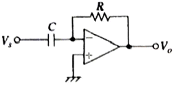
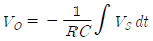
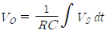
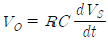
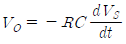
(정답률: 78%)

2. 다음 회로의 명칭으로 알맞은 것은?
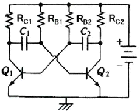
- 포스터-실리 검파기
- 멀티-바이브레이터
- 연산증폭기
- 차동증폭기
(정답률: 84%)
3. 트랜지스터 증폭기의 저주파(중간영역)에서의 전류이득을 0[dB]라고 할 때 α차단 주파수에서의 전류이득은 몇 dB 인가?
- 0
- -1
- -3
- -6
(정답률: 60%)
4. FET에 대한 설명으로 틀린 것은?
- 전압제어형 트랜지스터이다.
- BJT보다 잡음특성이 양호하다.
- BJT보다 이득 대역폭적(GBW)이 작다.
- BJT보다 온도변화에 따른 안정성이 낮다.
(정답률: 67%)
5. 다음 회로에서 출력전압은 몇 V 인가?
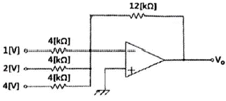
- -6
- -12
- -21
- -36
(정답률: 85%)
6. 단위 이득 주파수(fT)에 대한 설명으로 가장 적합한 것은?
- 개방 전압 이득이 10[dB]가 되는 주파수
- 개방 전압 이득이 0[dB]가 되는 주파수
- 개방 전압 이득이 최대 이득에서 6[dB]가 떨어지는 주파수
- 개방 전압 이득이 최대 이득에서 3[dB]가 떨어지는 주파수
(정답률: 67%)
7. 이미터 저항을 연결한 CE 증폭기에 대한 설명으로 적합하지 않은 것은?
- 입력저항이 증가한다.
- 전압이득이 감소한다.
- 출력저항이 많이 감소한다.
- 전류이득은 거의 변화 없다.
(정답률: 49%)
8. 직류 증폭기에서 온도 변화 등의 영향으로 인하여 출력이 변동되는 현상은?
- 발진
- 증폭
- 초퍼
- 드리프트
(정답률: 77%)
9. 이상적인 차동증폭기의 공통성분제거비(CMRR)는?
- 0
- 1
- -1
- 무한대(∞)
(정답률: 79%)
10. 단상 반파 정류회로의 이론상 최대 정류효율은 몇 % 인가?
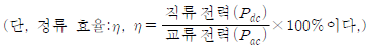
- 40.5
- 48.2
- 81.2
- 91.6
(정답률: 61%)
11. 금속산화물반도체 전계효과 트랜지스터(MOSFET)에 대한 설명으로 틀린 것은?
- 게이트의 전압이 임계 전압 이상으로 커지면 채널이 형성되기 시작하여 점차 채널 폭이 감소한다.
- 공핍형(depletion, D)과 증가형(enhancement, E) 2가지 형태가 있다.
- 정(+)의 게이트 소스 간에 전압이 가해지면 MOSFET는 증가형으로 동작한다.
- 공핍형 MOSFET는 게이트 전압이 0(V)일 때에도 채널이 존재한다.
(정답률: 48%)
12. 그림과 같은 파형의 전압을 교류전압계(AC Voltmeter)로 측정할 때 옳은 것은?
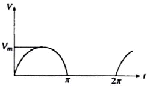
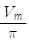
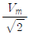
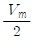
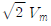
(정답률: 59%)
13. 주파수 대역폭을 넓히기 위한 방법으로 적합하지 않은 것은?
- 부귀환(feedback)을 사용한다.
- 복동조 회로(double tuned circuit)를 사용한다.
- 동조 회로(tuning circuit)의 Q를 높인다.
- 스태거 증폭(stagger ampliofication) 방식을 사용한다.
(정답률: 58%)
14. 정류기의 직류 출력전압이 전부하일 때 200(V), 무부하인 경우 225(V)이라면 전압변동률은 몇 % 인가?
- 10
- 12.5
- 20
- 25
(정답률: 82%)
15. 이상적인 구형파 입력 파형에 대한 출력 파형의 응답 시에 진폭과 시간 관계가 그림과 같을 때 하강 시간(fall time)은 몇 μs 인가? (단, 수치의 모든 단위는 μs 이다.)
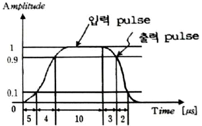
- 2
- 4
- 5
- 13
(정답률: 69%)
16. TV 수상기나 레이더 등과 같이 광대역 증폭을 요구하는 회로에 응용되는 증폭기는?
- 스태거 동조 증폭기
- 단일 동조 증폭기
- 복동조 증폭기
- 캐스코드 증폭기
(정답률: 69%)
17. 트랜지스터의 콜렉터 손실이 최대 정격 150(W)인 두 개의 트랜지스터를 B급 푸시풀(push-pull)로 동작하려할 때, 콜렉터 손실의 최대 정격이 허용하는 범위에서의 최대 출력은 약 몇 W 인가?
- 30
- 45
- 60
- 75
(정답률: 54%)
18. 전압 직렬귀환 증폭 회로의 입력 및 출력 저항은 귀환이 없을 때와 비교하면 어떻게 변화하는가?
- 입력 임피던스 : 증가, 출력 임피던스 : 증가
- 입력 임피던스 : 증가, 출력 임피던스 : 감소
- 입력 임피던스 : 감소, 출력 임피던스 : 증가
- 입력 임피던스 : 감소, 출력 임피던스 : 감소
(정답률: 79%)
19. 다음 회로에서 전압이득
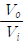
은? 단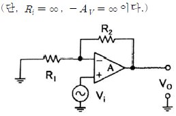
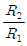
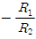
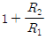
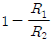
(정답률: 64%)
20. 다음 같은 증폭기에 관한 설명으로 틀린 것은?
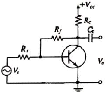
- 부귀환을 걸어줌으로써 출력 임피던스는감소한다.
- 부귀환을 걸어줌으로써 입력 임피던스는 증가한다.
- 무귀환 때에 비해 안정도가 좋아진다.
- 부귀환을 걸어줌으로써 일그러짐은 감소한다.
(정답률: 62%)
2과목: 전기자기학 및 회로이론
21. 벡터에 대한 계산식에서 틀린 것은?
- iㆍi = jㆍj = kㆍk = 0
- iㆍj = jㆍk = kㆍi = 0
- AㆍB = ABcosθ
- i×i = j×j = k×k = 0
(정답률: 63%)
22. 20×10-6(C)의 양전하와 -8×10-8 (C)의 음전하를 갖는 대전체가 유전율 2.5의 기름 속에서 5[cm] 거리에 있을 때 이 사이에 작용하는 힘(N)은?
- 반발력 2.304N
- 반발력 4.608N
- 흡인력 2.304N
- 흡인력 4.608N
(정답률: 66%)
23. 길이 l(m)의 도체로 원형코일을 만들어 일정 전류를 흘릴 때 M회 감았을 때의 중심 자계는 N회 감았을 때의 중심 자계의 몇 배인가?
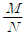
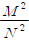
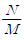
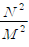
(정답률: 61%)
24. 비투자율이 μs이고 감자율이 N인 자성체를 외부 자계 H 중에 놓았을 때 자성체의 자화의 세기는 몇 Wb/m2 인가?
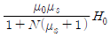
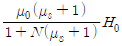
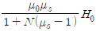
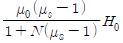
(정답률: 53%)
25. 공기 중 두 점전하 사이에 작용하는 힘이 15(N)이었다. 두 전하 사이에 유전체를 넣어더니 힘이 3(N)으로 되었다면 유전체의 비유전율은?
- 2.5
- 5
- 10
- 15
(정답률: 77%)
26. 전자파의 에너지 전달방향은?
- 전계 E의 방향과 같다.
- 자계 H의 방향과 같다.
- E×H의 방향과 같다.
- ▽×E의 방향과 같다.
(정답률: 68%)
27. 두 콘덴서 C1=5×10-6(F)와 C2=7×10-6(F)를 각각 100(V)와 200(V)로 충전한 후 극성이 같게 병렬 접속할 때 양단 전압은 약 몇 V 인가?
- 100
- 158
- 200
- 300
(정답률: 64%)
28. 반자성체에 해당되는 것은?
- Cu
- Fe
- Al
- Ni
(정답률: 63%)
29. 점전하 Q(C)에 의한 무한 평면 도체의 영상 전하는?
- Q(C)와 같다.
- -Q(C)보다 작다.
- Q(C)보다 크다.
- -Q(C)와 같다.
(정답률: 73%)
30. 코일의 자기인덕턴스를 L(H), 여기에 흐르는 전류를 I(A)라 할 때, 코일에 흐르는 전류의 변화에 인하여 그 코일에 기전력을 유기하는 현상을 무엇이라 하는가?
- 렌츠의 법칙
- 상호유도작용
- 자기유도작용
- 페러데이의 법칙
(정답률: 49%)
31. 함수 f(t)=2 를 라플라스로 변환하면?
- 2
- 2s
- 2/s
- 1
(정답률: 71%)
32. 이상 변압기에서 권선비 n1:n2=1:2 이고, RL=800(Ω)일 때 입력 측에서 본 등가 임피던스 Ri는 몇 Ω 인가?
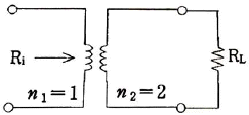
- 1600
- 400
- 200
- 100
(정답률: 63%)
33. 전송선로의 특성 임피던스와 부하 저항이 같으면 부하에서의 반사계수는?
- 0
- 0.3
- 0.5
- 1
(정답률: 65%)
34. 두 개의 교류전류 i1, i2가 다음과 같은 때, 합성전류 i1+i2 는? (단,
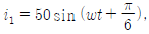
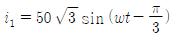
)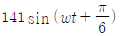
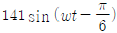
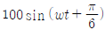
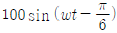
(정답률: 46%)
35. 복소평면(s 평면)에서 근의 위치가 그림의 X표 점에 있을 때 응답 파형은?
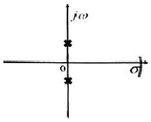
- 감쇠 진동한다.
- 지속 진동한다.
- 증가 진동한다.
- 단조 증가한다.
(정답률: 64%)
36. 전압이득 30을 데시벨(dB)로 표시하면? (단, log103=0.477 이다.)
- 25.45 dB
- 29.54 dB
- 30.12 dB
- 35.33 dB
(정답률: 73%)
37. VO=10(V), Ra=2(Ω), Rb=1(Ω)일 때 V1 및 V2의 전압 V는?
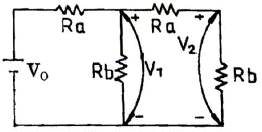
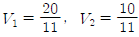
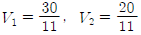
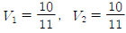
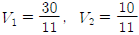
(정답률: 53%)
38. R-C 직렬 회로에 직류 전압을 가할 때 시정수(τ)를 표시하는 것은?
- C/R
- RC
- 1/(RC)
- R/C
(정답률: 75%)
39. 저항 R과 유도리액턴스 XL의 직렬회로에서 서셉턴스 B를 표현한 것으로 옳은 것은?
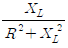
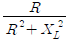
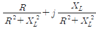
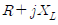
(정답률: 60%)
40. 소비전력이 100(W)인 회로의 역률이 0.8이면 이 회로의 무효전력은 몇 Var 인가?
- 125
- 80
- 75
- 60
(정답률: 44%)
3과목: 전자계산기일반
41. 실 매개변수의 값을 형식 매개변수로 전달하는 방법을 지칭하는 개념은?
- Call by reference
- Call by name
- Call by copy
- Call by value 논리식
(정답률: 69%)
42. 논리식 (
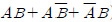
) 최소화한 것은?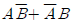
- A+B
- AB
- AB+1
(정답률: 64%)
43. 어떤 명령이 실행되기 위해 가장 우선적으로 수행되어야 하는 마이크로 동작은?
- PC → MBR
- PC+1 → PC
- MBR → IR
- PC → MAR
(정답률: 78%)
44. 8비트 2진수 01010110을 좌측으로 2번 회전시킬 때 변경된 데이터의 최종 값은?
- 00010101
- 01011001
- 10010101
- 01011000
(정답률: 61%)
45. Source program을 기계어 코드로 번역하기 위한 프로그램이 아닌 것은?
- Assembler
- Compiler
- Debugger
- Interpreter
(정답률: 65%)
46. 다음 기억장치를 중 접근시간(access time)이 가장 짧은 것은?
- RAM(random access memory)
- 자기 디스크(magnetic disk)
- 플로피 디스크(floppy disk)
- 자기 테이프(magnetic tape)
(정답률: 74%)
47. 10진수 36을 8비트로 표현하여 1의 보수를 취한 후 우측으로 1비트 산술 쉬프트 했을 때의 결과를 2진수로 나타내면?
- 11011011
- 01101101
- 01010010
- 01010011
(정답률: 56%)
48. 컴퓨터를 구성하는 회로 장치들 중에서 입력과 출력장치, 보조기억장치 등에도 직접 신호 결합되어 서로 간의 동작을 원활하게 하는 장치는?
- 비교장치
- 제어장치
- 조정장치
- 순서장치
(정답률: 72%)
49. 운영체제를 크게 두 부분으로 나누면?
- 제어, 감시프로그램
- 제어, 응용프로그램
- 처리, 감시프로그램
- 처리, 제어프로그램
(정답률: 62%)
50. 원시 프로그램을 기계어로 번역한 것은?
- 연결 프로그램(Linkage program)
- 목적 프로그램(Object program)
- 사용자 프로그램(User program)
- 원시 프로그램(Source program)
(정답률: 73%)
51. 다음 장치 중 컴퓨터의 입력장치가 아닌 것은?
- 카드판독기
- X-Y 플로터
- OMR
- 종이테이프 판독기
(정답률: 75%)
52. 인쇄된 글자를 빛을 쪼여서 반사되는 빛으로 해당되는 글자를 직접 판독하는 장치는?
- OMR
- OCR
- MICR
- COMR
(정답률: 69%)
53. JK 플립플롭에서 J=0, K=1로 입력될 때 플립플롭의 상태는?
- 0으로 변한다.
- 1로 변한다.
- 이전의 내용에 대한 complement로 된다.
- 이전의 내용이 그대로 남는다.
(정답률: 68%)
54. 인터프리터 방식의 고급언어인 것은?
- GWBASIC
- ANSI C
- COBOL
- FORTRAN
(정답률: 58%)
55. 마이크로프로세서 내에서 범용 레지스터가 기억하지 않는 것은?
- 연산할 데이터
- 연산된 결과
- 실행될 명령어
- 주기억장치에서 보내온 데이터
(정답률: 56%)
56. Control Unit에서 다음에 실행할 마이크로 명령어의 주소를 가지고 있는 레지스터는?
- CBR
- CAR
- IR
- PC
(정답률: 51%)
57. 다음 진로표(truth table)가 나타내는 회로는? (단, A,B는 입력이고, Z는 출력이다.)
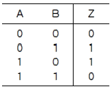
- AND
- XOR
- OR
- NAND
(정답률: 72%)
58. 마이크로컴퓨터에서 양 방향성을 가진 Bus는?
- Address Bus
- Control Bus
- Data Bus
- Interrupt Bus
(정답률: 70%)
59. 어떤 컴퓨터의 클럭 펄스가 2[MHz]이고, 16비트 레지스터를 가지고 데이터를 직렬 전송할 때 워드 시간은 몇 [μs]인가?
- 0.5
- 4
- 8
- 16
(정답률: 59%)
60. 확장 2진화 10진 코드라고도 부르며, 대형 컴퓨터에서 널리 채용되어 사용되고 있고 컴퓨터 통신에서도 사용되고 있는 코드는?
- GRAY 코드
- ASCII 코드
- BCD 코드
- EBCDIC 코드
(정답률: 59%)
4과목: 전자계측
61. 레헤르선(Lecher wire)의 길이 5(m)일 때 주파수 f는? (단, 빛의 속도[전파 속도] C=3×108 [m/s]이다.)
- 30 kHz
- 60 MHz
- 30 MHz
- 300 kHz
(정답률: 51%)
62. 헤테로다인 주파수계에서 단일비트법보다 이중비트법이 더 좋은 이유는?
- 취급이 용이하다.
- 정확도가 높다.
- 구조가 간단하다.
- 주파수 측정범위가 넓다.
(정답률: 60%)
63. 음차 발진기의 특성에 대한 설명 중 옳지 못한 것은?
- 주파수를 가변시킬 수 없다.
- 제작이 용이하고 취급이 간단하다.
- 가청 주파수 이하의 주파수 부표준기로 적합하다.
- 주파수가 안정되고, 일정하며 출력 파형이 좋다.
(정답률: 57%)
64. 압전 저항효과를 이용하는 센서는?
- 압력센서
- 열전센서
- 자기센서
- 광센서
(정답률: 71%)
65. 송신기에 관한 측정이 아닌 것은?
- 변조도(Modulation)
- 왜율(Distrotion)
- 신호대 잡음(S/N) 비
- 선택도(Selectivity)
(정답률: 57%)
66. 그림에서 입력전압 Ei, 출력전압을 EO라 하고 1,2차 코일 L1, L2의 저항분을 무시하면 EO의 값은?
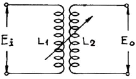
(정답률: 47%)
67. 신호파형에서 전압 V와 시간 T의 관계를 직접 측정할 수 있는 계측기는?
- 임피던스 분석기
- 벡터 분석기
- 오실로스코프
- 계수기
(정답률: 80%)
68. 제조한 저항 값의 범위가 1.14(kΩ)에서 1.26(kΩ)인 저항기를 1.2(kΩ)로 표시할 때 허용 오차는?
- ±10%
- ±5%
- ±3%
- ±2%
(정답률: 66%)
69. 칼로리 미터법에 의해 고주파 전력을 측정하는 식으로 옳은 것은? (단, 인입구 온도 T1[℃], 출구의 온도 T2[℃], 냉각수의 유량을 Q[cc/min]라 한다.)
- P = KQ(T2+T1)
- P = KQ(T1-T2)
- P = KQ(T1×T2)
- P = KQ(T2-T1)
(정답률: 69%)
70. 내부저항 rm[Ω]인 전류계의 측정범위를 10배로 하기 위하여 분류기 Rs[Ω]을 병렬로 접속하였다. rm과 Rs의 관계식 중 옳은 것은?
(정답률: 54%)
71. 지시계기의 제동(Damping) 장치가 쓰이지 않는 것은?
- 와류 제동
- 공기 제동
- 액체 제동
- 스프링 제동
(정답률: 61%)
72. 오실로스코프의 Y축에 미지 주파수의 정현파 X축에 100(Hz)의 정현파를 접속하여 그림과 같은 도형이 얻어졌을 때 미지 주파수는 몇 Hz 인가?
- 50
- 66.7
- 150
- 300
(정답률: 54%)
73. 전압계에 의한 오차를 설명한 것 중 잘못된 것은?
- 전압계의 내부저항과는 무관하다.
- 실제 전압 값은 측정값보다 더욱 큰 값을 갖는다.
- 전압계를 연결함으로써 실제 부하 값보다 등가저항이 감소한다.
- 전압계는 부하저항과 병렬로 연결하여야만 한다.
(정답률: 56%)
74. 측정자의 수를 늘리거나 측정자의 훈련에 의해 제거할 수 있는 측정오차는?
- 개인적 오차
- 과실 오차
- 이론적 오차
- 우연 오차
(정답률: 59%)
75. Q 미터로 측정할 수 없는 것은?
- 코일의 실효 인덕턴스
- 커패시터의 정전용량
- 코일의 상호 인덕턴스
- 코일의 분포용량
(정답률: 50%)
76. 10(kHz) 이하의 저주파용으로 감도와 정확도가 높아 미소한 전류나 전압의 측정에 사용하는 계기는?
- 정전형 계기
- 정류형 계기
- 유도형 계기
- 가동철편형 계기
(정답률: 38%)
77. 수신기에 관한 측정이 아닌 것은?
- 감도
- 변조도
- 선택도
- 충실도
(정답률: 49%)
78. 비교기 기준전압을 0(V)로 하고 입력에 사인파 전압을 가할 때 출력에 나타나는 전압파형은? (단, 기준전압은 VA, 입력전압은 VR, 출력전압은 V0이다.)
- 삼각파
- 정현파
- 구형파
- 계단파
(정답률: 65%)
79. 오실로스코프로 관측하려고 하는 파형을 정지시키는 방법이 아닌 것은?
- 외부 동기
- 내부 동기
- 진원 동기
- 시차 동기
(정답률: 63%)
80. 직류(DC) 전류계 및 직류 전압계로 쓰이는 계기는?
- 가동코일형
- 전류력계형
- 가동철편형
- 정전형
(정답률: 49%)